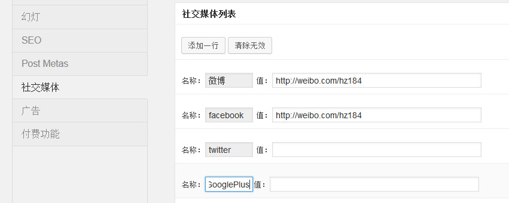

GD使用了强大的Admin Options作为后台开发框架，实现了高度的可控。前台的很多东西可以通过后台直接设置，例如logo、版权、SEO、广告等。而且在前台，如果你稍微懂一点代码，就可以极快的调用后台增加的选项。
你需要在你的网站中贴出你的google+地址，但是主题默认是没有的。怎么办呢？进入后台“外观-Admin Options”选项，选择“社交媒体”菜单，添加一个名为 GooglePlus 的项，如下图：

添加之后，按照下方的提示信息，在你的主题中使用代码：
global $admin_options; $socials = array_admin_options($admin_options['social']); $GooglePlus = $socials['GooglePlus'];
使用方法非常简单。
后台加入的这些功能，不单单是对前台的控制，而且是可以扩展的，这在以前所有的主题中都是没有的，而且更重要的是，内置的这些功能（SEO、Post Metas等）是免费的！